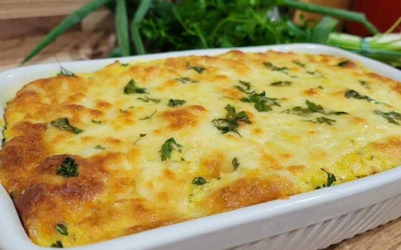

Aves · Frango
Soufflé de frango Macedo

Ingredientes
- 1 frango (ou 5 coxas e sobrecoxas) cozido nos temperos
- 4 ovos
- 1 xícara (chá) de leite
- 1 colher (sopa) rasa de farinha de trigo
- 1 pires de queijo ralado
- 1 colher (sopa) de manteiga
- 1 xícara (chá) de molho do frango
- 6 batatas cozidas
Modo de preparo
- Desosse o frango. Dissolva a farinha no leite.
- Junte as gemas, as batatas picadas, o queijo, a manteiga, o frango e o molho.
- Coloque em pirex untado, cubra com as claras batidas em neve e asse no forno.